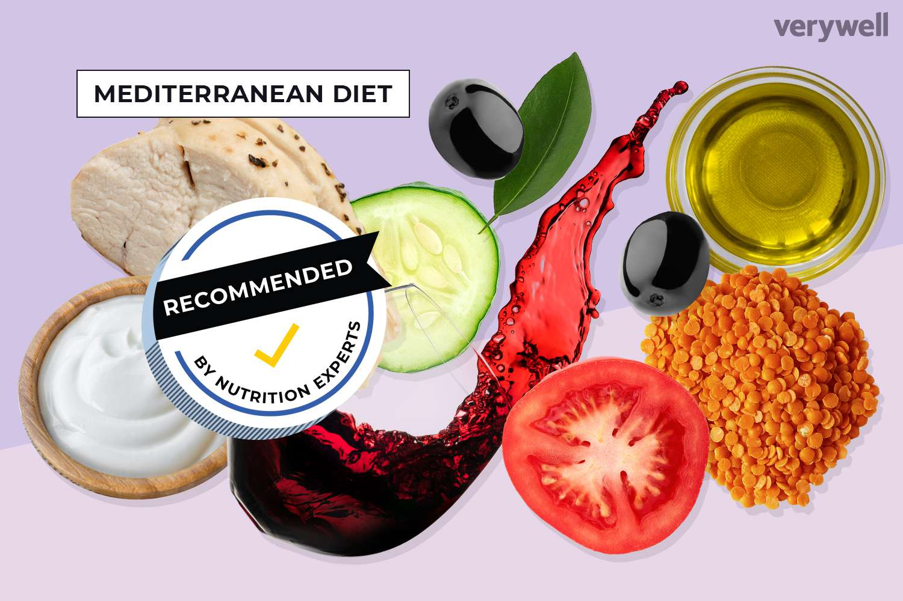

النظام الغذائي البحر الأبيض المتوسط (The Mediterranean diet) هو نمط غذائي مستوحى من الأنماط الغذائية التقليدية للدول المحاذية للبحر الأبيض المتوسط مثل اليونان وإيطاليا وإسبانيا والمغرب. يُعتبر هذا النظام الغذائي صحيًا ومتوازنًا ويعزز العافية العامة.
1. تناول الأغذية النباتية بشكل وافر: يُشجع على تناول الفواكه والخضروات والبقوليات والحبوب الكاملة والمكسرات والبذور. تحتوي هذه الأطعمة على فيتامينات ومعادن وألياف ومضادات الأكسدة. 2. الدهون الصحية: زيت الزيتون هو المصدر الرئيسي للدهون في النظام الغذائي البحر الأبيض المتوسط. إنه غني بالدهون غير المشبعة والمفيدة لصحة القلب. من مصادر الدهون الصحية الأخرى تشمل الأفوكادو والمكسرات والبذور. 3. استهلاك معتدل للأسماك والدواجن: يُشجع على تناول الأسماك، خاصة الأسماك الدهنية مثل السالمون والسردين والماكريل، والتي تحتوي على نسبة عالية من الأحماض الدهنية أوميغا-3. يتم تضمين الدواجن أيضًا بمعدل معتدل. 4. تقليل استهلاك اللحوم الحمراء: يتم تناول اللحوم الحمراء بكميات صغيرة في النظام الغذائي البحر الأبيض المتوسط. غالبًا ما يتم احتفاظها للمناسبات الخاصة أو تناولها في حصص أقل. 5. الاعتدال في استهلاك المنتجات الألبان: يشمل النظام الغذائي كميات معتدلة من منتجات الألبان مثل الجبن والزبادي، والتي تعتبر مصادر للكالسيوم والبروبيوتيك. 6. الأعشاب والتوابل: يعتمد النظام الغذائي البحر الأبيض المتوسط على الأعشاب والتوابل لتعزيز النكهة بدلاً من الاعتماد على كميات زائدة من الملح. هذا الأسلوب يجعل الوجبات لذيذة ويقلل من استهلاك الصوديوم. 7. استهلاك متقطع للحلويات والنبيذ الأحمر: على الرغم من أنها ليست جالجزء الأساسي من النظام الغذائي، فإن استهلاك الحلويات محدود ويتم تناولها بكميات معتدلة، مثل العسل والمربى. كما يُشجع أحيانًا على تناول كأس من النبيذ الأحمر بمعدل معتدل.
يرتبط نظام البحر الأبيض المتوسط الغذائي بالعديد من الفوائد الصحية ، بما في ذلك تقليل مخاطر الإصابة بأمراض القلب وبعض أنواع السرطان والحالات المزمنة مثل السكري والسمنة. ومن المعروف أيضًا أنه يعزز طول العمر والرفاهية العامة. ومع ذلك ، من المهم أن تتذكر أن الاحتياجات الغذائية الفردية قد تختلف ، ويُنصح دائمًا بالتشاور مع أخصائي الرعاية الصحية أو اختصاصي التغذية المسجل قبل إجراء تغييرات كبيرة على نظامك الغذائي.